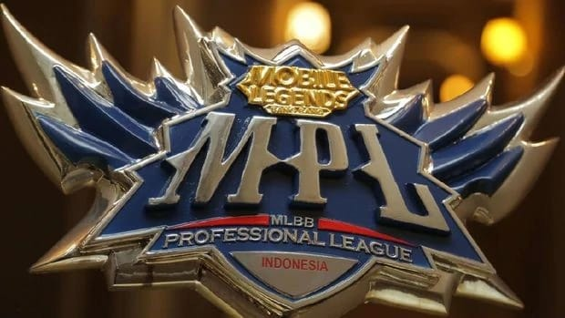
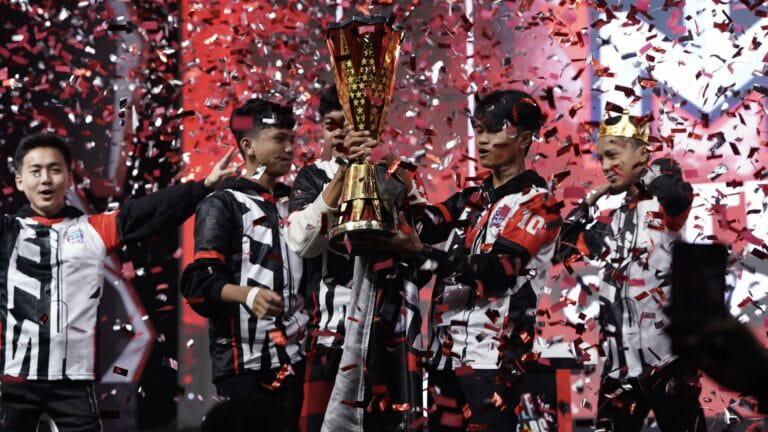
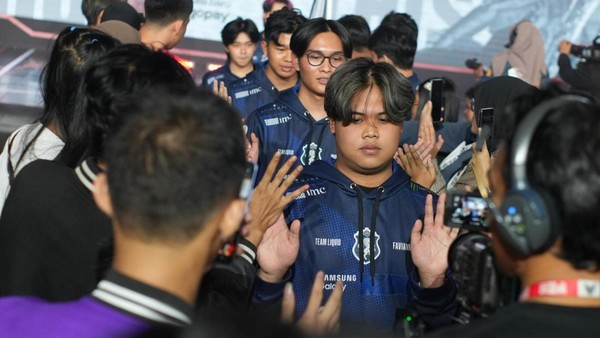
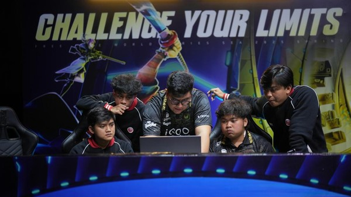
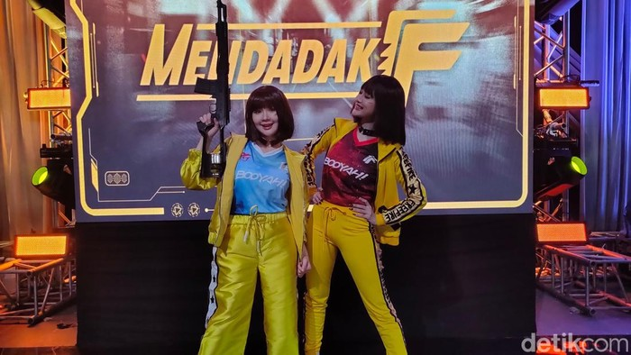

3 eks pro player MLBB paling dirindukan balik ke skena kompetitif

Dari sekian banyak eks pro player MLBB yang kini sudah tidak bersaing lagi di scene kompetitif, ada beberapa di antara mereka yang hingga saat ini masih memiliki banyak penggemar dan kemampuannya tetap dihormati oleh para pro player yang kini masih aktif. Sebagian besar di antara mereka kini telah sukses melanjutkan karier di sisi entertainment esports dengan menjadi streamer dan YouTuber gaming. Hal ini juga yang membuat mereka tetap dekat dengan penggemarnya, serta terus menunjukkan kemampuan bermainnya.
Jess No Limit
Mengawali karier Mobile Legends bersama tim Saints Indo, nama JessNoLimit semakin besar setelah bergabung dengan EVOS Esports dan tampil di MPL ID Season 1. Selain skill, pemilik nama lengkap Tobias Justin ini begitu disukai karena sikapnya yang ramah kepada fans.Tuturu
Status Tuturu saat ini masih abu-abu, apakah ia sudah benar-benar pensiun sebagai pro player MLBB atau hanya beristirahat sementara. Terlebih, ia juga sempat mengalami masalah syaraf di tangannya yang membuatnya sangat sulit untuk bermain di level tertinggi.
Donkey
Sebagai salah satu player veteran yang ada di scene Mobile Legends Indonesia, Donkey berhasil mengangkat namanya setelah mengantarkan EVOS Legends untuk pertama kali meraih gelar juara MPL ID pada Season 4, setelah sempat gagal di Season 1 dan berpindah-pindah organisasi dengan memperkuat Louvre Esports dan Revo.
STM juara Battle of Stars Free Fire, Antiban dibuat tak berkutik!

Congratulations, STM juara Battle of Stars Free Fire! Kemeriahan Battle of Stars Free Fire sukses pecahkan JCC Senayan, Jakarta pada Minggu (30/6) di mana hampir 5 ribu survivors menyaksikan keseruan pertandingan para tim Elit CS Indonesia merebut gelar juara Battle of Stars Free Fire. Event Battle of Stars Free Fire menjadi salah satu bagian dari acara perayaan hari ulang tahun ke-7 atau 7th Anniversary Free Fire di tahun 2024.
Menampilkan tim-tim Elit CS terbaik di Indonesia, Battle of Stars menampilkan Antiban, Dominators, STM SC dan Ninjayu sebagai tim top 4. Seluruh peserta telah melewati tahap seleksi yang panjang dan akhirnya menjadi 4 tim teratas untuk bisa mendapatkan gelar juara Battle of Stars.
Seluruh tim memiliki kapten dan roster yang ikonik di mana Antiban bersama Asep Rocky sebagai kapten, Dominators dipimpin Letda Hyper, STM SC dipimpin Aldi TV dan Yuez Batosai memimpin tim Ninjayu di Battle of Stars Free Fire.
Timnas IESF 2025 Mobile Legends Diumumkan, Full Roster Team Liquid ID

Pengurus Besar Esports Indonesia (PB ESI), mengumumkan sederet pemain Mobile Legends yang akan mewakili Indonesia di IESF World Eposts Championships 2025. Line-up diisi full roster Team Liquid ID. Adapun sejumlah pemain tersebut adalah Aldhia Fahmi Aranda alias Aran, Christian Widy Wardhana alias Widy, Favian Bayu Putra alias Faviannn, Sultan Muhammad alias Aeronnshikii, Yehezkiel Wiseman Hamonangan alias Yehezkiel, dan Riski alias Kyou. Urusan meramu strategi, tim mempercayakannya kepada Doly Van Pelo Sihotang. Dirinya akan ditemani oleh asisten pelatih, Usep Setiawan, dihimpun detikINET dari media sosial PB ESI, Jumat (30/5/2025).
IESF 2025 akan mempertandingkan lima game esports populer, di antaranya Counter Strike 2, Dota 2, eFootball, Mobile Legends, dan PUBG Mobile. Kurang lebih daftar judul ini masih serupa dengan kompetisinya tahun lalu. Sebanyak 136 negara telah resmi mendaftar untuk kualifikasi nasional musim esports 2025. Jumlah ini mengalami peningkatan dari sebelumnya 130 negara yang berpartisipasi. "Partisipasi 136 Federasi Anggota dalam Kualifikasi Nasional tahun ini merupakan pencapaian yang luar biasa. Hal ini mencerminkan semangat, dedikasi, dan persatuan yang mendalam dalam komunitas esports global," kata Sekretaris Jenderal IESF, Boban Totovski.
IESF edisi ke-17 ini tidak hanya akan menyoroti persaingan para atlet meraih gelar juara. Turnamen ini juga fokus memperkuat komitmen IESF terhadap inklusivitas, keberagaman, dan permainan yang adil dalam ekosistem esports. "Kami bangga dapat melanjutkan kolaborasi kami dengan penerbit game terkemuka untuk memastikan kualitas kompetisi tertinggi untuk musim 2025. Kegembiraan di antara para atlet sudah luar biasa saat mereka bersiap untuk mewakili negara mereka di panggung besar. Tahun ini, kami mengantisipasi tingkat kompetisi yang lebih tinggi saat tim dan pemain mendorong batas-batas Esports," ujar Manajer Esports di IESF, Igor Nedeski.
Hasil FFWS SEA 2025 Spring Week 5: Bigetron Susul RRQ ke Final

Bigetron Esports berhasil menyusul RRQ Kazu ke babak finals. Mereka menjadi tim kedua dari Indonesia yang berhasil melakukannya. Sedangkan tiga tim Free Fire dari Indonesia lainnya, Evos Divine, Onic, dan Vesakha Esports, masih harus berjuang di pekan keenam. Ketiganya wajib menempati peringkat enam teratas, supaya bisa mengikuti jejak Bigetron dan RRQ Kazu. Pada pekan kelima, selain Bigetron, dua tim lainnya yang berhasil lolos ke final ialah Virtus Pro dan All Gamers Global. Dua tim asal Thailand ini menduduki puncak klasemen pada hari pertama dan ketiga.
Virtus Pro tampil gemilang selama pertandingan. Mereka berhasil unggul dari 11 tim lain yang saat itu juga berupaya meraih peringkat pertama. Dari enam game yang dilakoni, tim ini berhasil menggasak dua booyah dan 64 poin eliminasi. Mereka pun mampu meninggalkan jauh lawan-lawannya dengan total 117 poin.
Lalu pada hari kedua, Bigetron Esports susah payah meraih urutan pertama. Mereka harus berjibaku dengan kerasnya permainan All Gamers Global. Bahkan di akhir laga, meskipun akhirnya berhasil mencapai posisi pertama, selisih poinnya sangat tipis dengan All Gamers Global yang ada di peringkat kedua. Perbedaannya cuma satu poin. Gagal mendapatkan tiket final pada hari kedua, All Gamers Global membalas keesokan harinya. Namun perjuangannya tidak mudah sama sekali, karena mendapat perlawanan ketat dari Evos Divine. Bahkan poin yang didapatkan keduanya sama. Mereka berhasil mengumpulkan total 92 poin. Lantas mengapa malah All Gamers Global yang lolos? Hal ini mengingat jumlah kill-nya berbeda. All Gamers Global mengoleksi 58 poin eliminasi. Sedangkan Evos memperoleh 55 poin eliminasi.
Gemes Banget Liat Punipun dan Kameaam Tampil di Mendadak FF

Gemes banget lihat Clarissa Punipun dan Kameaam di Mendadak FF, kompetisi esports yang digelar oleh Rans Entertainment. Clarissa Punipun dan Kameaam, cosplayer kondang Indonesia, hadir di Mendadak FF nih.Di sini mereka datang dan meniru salah satu karakter Free Fire bernama Kelly.
Nah keduanya datang bukan sebagai cosplayer lho.Punipun dan Kameaam menjadi pemain yang bertanding di acara besutan Rans Entertainment ini.Mereka tergabung di dua tim berbeda. Punipun berada di tim Frost yang dipimpin Raffi Ahmad. Sedangkan Kameaam ada di tim Fire yang dikepalai Baim Wong.
Pertandinganya digelar secara offline di Studio Sepat 72, Pasar Minggu, Jakarta Selatan pada hari ini, Jumat (22/12/2023).Kendati demikian, para penggemar Free Fire bisa menikmati tayangan langsungnya di YouTube Rans Entertainment.Kira-kira, siapa yang akan menang ya. Apakah tim Raffi Ahmad atau tim Baim Wong?